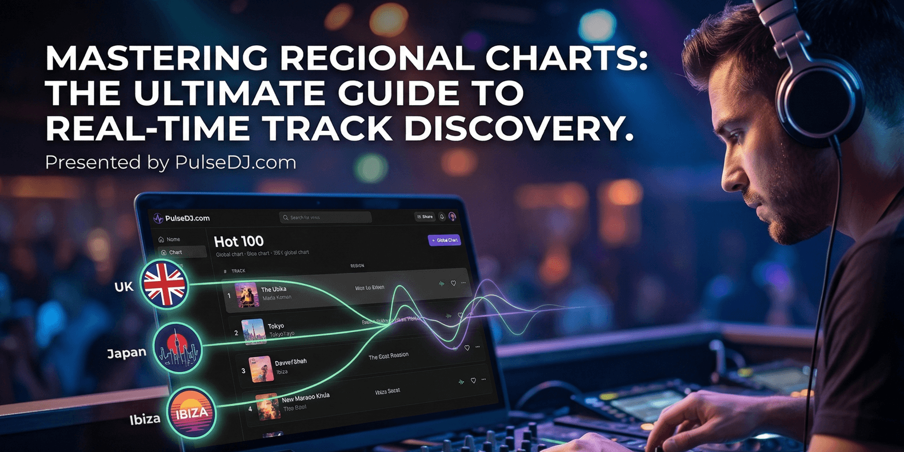
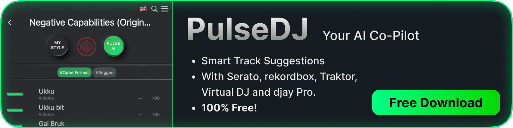
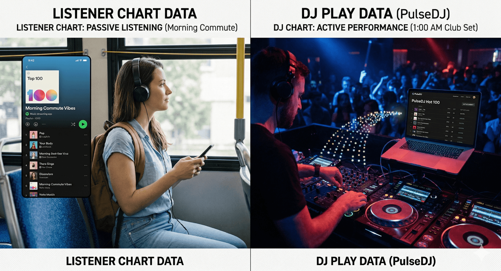
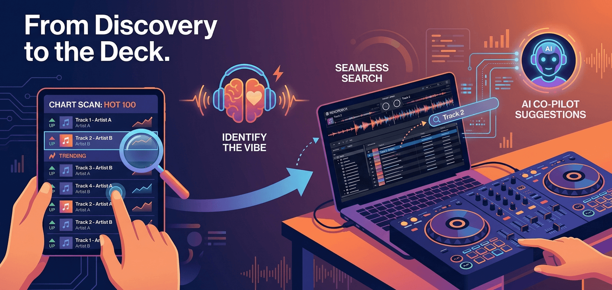

Pro Tips

After thousands of hours behind the decks, I’ve realized that the secret to a packed floor isn't just the technicality of the transition; it's knowing exactly what the room wants before they even know it themselves.
What You’ll Learn
- How to escape the mainstream bubble and find tracks that are actually working in live club environments.
- The strategy for using regional filters to curate specific vibes for destination weddings and international gigs.
- Why real-time data from other professional DJs is more reliable than curated streaming playlists.
- How to streamline your music discovery and playlist preparation using PulseDJ.com.
The Problem with Traditional Music Discovery
We’ve all been there: you spend hours digging through Beatport or Spotify, only to realize that the "Top 10" is filled with tracks that everyone else is already playing. By the time a song hits a general streaming chart, its impact in a club setting has often peaked. As a working DJ, I need to know what is trending right now, not what was popular three weeks ago.
The struggle is even more real when you are playing outside of your usual residency. If I’m booked for a set in a city I’ve never played before, I can't rely on my local knowledge. I need data that reflects what real DJs are dropping in that specific territory to ensure my set resonates with the local culture.
Why Every Pro Needs an AI Co-Pilot
The reality of 2026 is that we have access to more music than ever before, which makes the job of curation harder, not easier. Having an assistant that can analyze millions of parties and playlists in real-time is no longer a luxury - it’s a necessity for staying fresh.
I’ve found that using an AI-driven tool doesn't take away my creativity; it enhances it. It reminds me of those "perfect" tracks I might have forgotten or suggests a trending hit that I didn't realize was blowing up. It keeps me from "blacking out" during a long set and ensures the energy never dips.
PulseDJ.com - Your Smart DJ Assistant

PulseDJ.com is a revolutionary AI co-pilot designed to work seamlessly alongside your existing DJ software. Whether you use Serato, Rekordbox, Traktor, VirtualDJ, or Algoriddim djay PRO, PulseDJ.com reads your history files in real-time to provide intelligent track recommendations.
It utilizes a safe, one-way data flow to ensure your performance laptop remains stable and crash-free. With features like the Hot 100 regional charts and BPM/Key matching, it’s the ultimate tool for modern music trends and smarter set preparation.
It's completely free - Download PulseDJ Now
Why DJ Play Data is the Gold Standard

The difference between a "listener" chart and a "DJ" chart is massive. A song might have millions of streams because it’s great for a morning commute, but that doesn't mean it will work at 1:00 AM in a dark room.
The PulseDJ Hot 100 changes the game because it isn't based on passive listening; it is based on active performance. It aggregates anonymous data from thousands of DJs to show which tracks are actually being loaded into decks and played out. This gives you a high-level view of dance floor energy that you simply cannot get from a radio chart.
Global vs. Local: Discovery Strategies
Discovery Method
Target Audience
Data Source
Best For
Streaming Charts
General Public
Passive Listens
Identifying radio hits and pop crossovers.
Record Pools
Professional DJs
Downloads
Finding high-quality files and extended edits.
PulseDJ Global Hot 100
Club/Event DJs
Real-time Live Plays
Spotting worldwide dance floor trends as they happen.
PulseDJ Regional Filters
International/Niche DJs
Localized Live Plays
Preparing for specific geographic markets or genres.
Cracking the Code with Regional Filters
One of the most underutilized features in modern DJ software is the ability to filter by region. If I have a corporate gig in London next week, I don't want to know what’s trending in Los Angeles.
Using the country-specific filters in the Hot 100 allows me to see the exact tracks my peers in the UK are currently leaning on. It helps me identify regional anthems or local remixes that might not have crossed over globally yet. This level of track discovery allows you to show up to any gig looking like a local expert, even if it's your first time in the country.
From Discovery to the Deck: My Workflow Tips

Having a massive list of tracks is useless if you can't get them into your performance software quickly. My workflow is built around speed and reliability. When I’m browsing the charts and see a trending track that fits my style, I can instantly see its BPM and Key.
- Scan the Charts : I check the Hot 100 every few days to see what’s moving up the ranks.
- Identify the Vibe : I look for tracks that match the energy of the sets I have coming up.
- Seamless Search : I click the track name in PulseDJ to copy it, then paste it directly into my search bar in Rekordbox or Serato.
- Trust the AI : While I'm playing, I let the AI co-pilot suggest the next move based on those trending tracks and my own library.
Start Track Discovery with PulseDJ.com
The best way to stay ahead of the curve is to stop guessing and start using the data that thousands of other pros are already generating. If you want to elevate your sets and make your music discovery process more efficient, you need to see the Hot 100 in action.
I encourage you to download PulseDJ.com today and start exploring the charts for your next gig. It’s the easiest way to ensure you’re always playing the best music for your crowd.
‹ Best AI DJing Apps to Level Up Your Sets